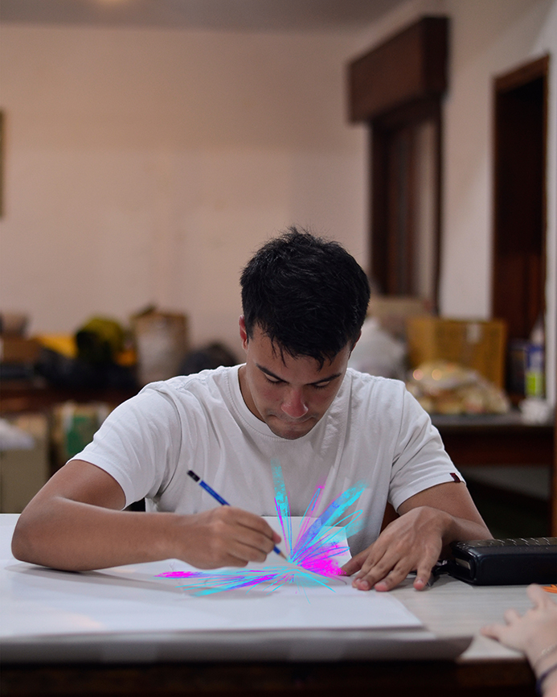

Llevo viviendo 22 años en este mundo. Soy de Argentina y desde mi poca experiencia ya sea con la ilustración o diseño gráfico, pude trabajar con gente que nunca me hubiera imaginado, o incluso con personas fuera del país, desde mi hogar. Sea el trabajo que se presente, siempre dispongo de mucha dedicación y corazón a cada proyecto para poder plasmar lo que el cliente tenía en mente. Se usar programas como Photoshop, Illustrator, In Design, Premier Pro. También se editar videos, y usar el lenguaje de etiquetas Html. Me desarrollo bien en equipo y poseo un nivel de inglés moderado.
